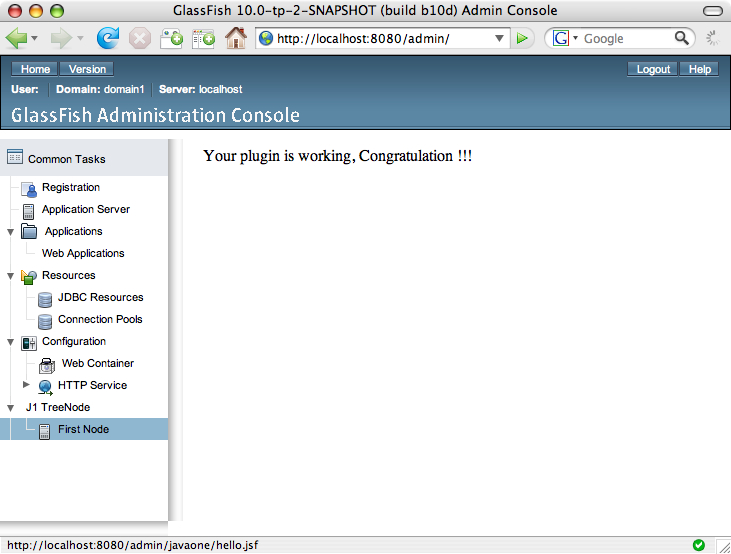

Exercise 1: Plugging into GlassFish
Introduction:
The goal of Exercise 1 is to develop a GlassFish plugin module. You will create a GlassFish plugin that will add a page and tree nodes to the GlassFish Administration Console. When you complete this exercise, your plugin will look like this:

In this exercise, you will learn how to do the following:
- Build a GlassFish v3 plugin module.
- Integrate a plugin module into GlassFish v3 to extend the Administration Console.
- Access the GlassFish v3 Administration Console and see your plugin
Background information:
This section provides more detail about the GlassFish v3 build environment and
architecture. This information is non-essential for completing this lab,
however, it will give you better insight into the design of GlassFish
v3. To proceed with the lab, conintue to the "Step-by-Step Instructions"
section.
GlassFish (HK2) Modules
GlassFish uses the HK2 project (https://hk2.dev.java.net) to provide "modules" which can be plugged together to build an application server with unique capabilities. These GlassFish (or HK2) modules need only be placed in the <install-root>/modules directory to be found by the environment. The modules describe themselves to GlassFish so that GlassFish knows how to interact with them. This is done by using the HK2 @Contract and @Service annotations.
The @Contract annotation is typically placed on a Java Interface. Doing this makes the interface known to HK2. Here is an example Java Interface annotated with the @Contract annotation:
@Contract
public interface ConsoleProvider {
/**
* <p> Returns a <code>URL</code> to the <code>console-config.xml</code>
* file, or <code>null</code>. If <code>null</code> is returned, the
* default (@{link #DEFAULT_CONFIG_FILENAME}) will be used.</p>
*/
public URL getConfiguration();
/**
* <p> The default location of the <code>console-config.xml</code>.</p>
*/
public String DEFAULT_CONFIG_FILENAME =
"META-INF/admingui/console-config.xml";
}
The @Service annotation is placed on a Java Class which typically implements a Java Interface which is annotated by the @Contract annotation. When @Service annotations are processed by the Annotation Processor Tool at compile-time, the HK2 processor creates an entry in the META-INF/inhabitants/default file, such as:
class=org.example.glassfish.admingui.MyPlugin,index=org.glassfish.api.admingui.ConsoleProvider
This is used to efficiently locate all implementations of a @Contract in the system.
Lets consider an example of how this is used. The GlassFish Administration Console needs to find GlassFish Modules that wish to integrate content. To do this, each of these GlassFish Modules must provide an implementation of the ConsoleProvider "@Contract" Interface which is annotated with the @Service annotation. The GlassFish Administration Console is then able to easily find these implementations and access the configuration file they specify via their interface (see figure 1-2). Once the configuration information is obtained, the task of integrating the new content is easily performed.
You can find more information about this architecture at the GlassFish or HK2 web sites:
The exercises in this lab aim to describe in detail the specific steps required to create a module and to integrate with the GlassFish Administration Console. Complete this lab to gain a better understanding of these steps.
Source code system layout
This section of the document describes the file layout found in the lab
exercises, as well as the layout of all GlassFish Modules. A snapshot of
the GlassFish v3 source code can be found under the
gfplugin/glassfish-src
directory. This is for your reference only and is NOT needed for
any exercises in this lab. To obtain the latest GlassFish source code,
you can follow the instructions found on the GlassFish v3 build instructions
web site:
http://wiki.glassfish.java.net/Wiki.jsp?page=V3FullBuildInstructions.
When viewing the top-level directory of the GlassFish source, you should note
all the sub-directories are Maven Modules, which follow a standard maven 2
project layout. The java source files are under
<maven-module>/src/main/java. Additional resources are under
<maven-module>/src/main/resources. Unit tests are under
<maven-module>/src/test/java. There is a pom.xml file for each
maven module that specifies information such as: parent Maven Module, groupId,
artifactId, version number, build dependencies, and build and packaging
instructions. Configuration information from a parent Maven Module is
inherited.
The source code for the GlassFish Administration Console is located in the directory named "admingui". This lab does not touch any of the files in the GlassFish Administration Console, it instead provides a plugin which is integrated seamlessly with the GlassFish Administration Console. If you want to know more details about the GlassFish Administration Console, below is an explanation of all the admingui sub-modules. The specifics of the Adminstration Console itself are, however, outside the scope of this lab. You may become involved the the GlassFish Administration Console team or find out more information by going to https://glassfish.dev.java.net or emailing admin@glassfish.dev.java.net.
Plugin Service Module
This module detects all GlassFish Modules that provide
IntegrationPoints to the console. It also contains code
to discover and serve all additional resources provided by other plugin
modules (JSFTemplating JavaServer Faces Pages, Images, Java code, etc.).
v3/admingui/plugin-service/pom.xml v3/admingui/plugin-service/src/main/java/org/glassfish/admingui/plugin/ConsoleClassLoader.java v3/admingui/plugin-service/src/main/java/org/glassfish/admingui/plugin/ConsoleConfig.java v3/admingui/plugin-service/src/main/java/org/glassfish/admingui/plugin/ConsolePluginService.java v3/admingui/plugin-service/src/main/java/org/glassfish/admingui/plugin/IntegrationPoint.java
This module provides infrastructure for the GlassFish Administration Console. It contains code for initialization, setting up the home page, building the navigation tree, common utilities, etc. This includes the JavaServer Faces pages such as the common task page, header, version window, top-level tree nodes and their corresponding pages.
v3/admingui/pom.xml v3/admingui/core/src/main/java/com/sun/enterprise/tools/admingui/handlers v3/admingui/core/src/main/resources/home.jsf
This is the war packaging module which contains the deployment descriptor and
includes the console-core-1.0-SNAPSHOT.jar which is built from the core
module. After the build cycle, a war file is created ready for
deployment.
v3/admingui/war/ v3/admingui/war/src/main/webApp
Step-by-Step Instructions:
Overview:
In this excercise, you will complete the following:
- Implement the ConsoleProvider @Contract
In this step, you will create a Java Class which implements the
ConsoleProvider @Contract. This is done so your plugin can be discovered by the GlassFish v3 Administration Console. Implementing theConsoleProviderinterface is simply a matter of annotating your class with the@Serviceannotation and implementing its single method. - Provide a console-config.xml file
This file is necessary to declare your "
IntegrationPoints." In this step, you will learn what anIntegrationPointis and how to define them.
- Create a couple JavaServer Faces pages
JavaServer Faces pages are needed to produce the content you are providing. You will create 2 very simple JSFTemplating JavaServer Faces pages.
- Build and Install your first GlassFish v3 plugin
In this step you will install and test your plugin.
Steps:
A. Implement the ConsoleProvider @Contract
In this step, you will create a Java Class which implements the
ConsoleProvider @Contract. This is done so your plugin can be
discovered by the GlassFish v3 Administration Console. Implementing the
ConsoleProvider interface is simply a matter of annotating your
class with the @Service annotation and implementing its single
method.
For more background information, please see the GlassFish (HK2) Modules section above. Or the HK2 Component Model web page.
If you are not using NetBeans, skip to step A-2 "Create your plugin Java @Service Class".
- Open the plugin module in NetBeans
- Launch NetBeans IDE 6.0.
- Open plugin module.
- Choose Open Project from the File menu.
- Browse to gfplugin and select myplugin.
- Press the Open Project button.
 Figure 1-7: Open Project myplugin
Figure 1-7: Open Project myplugin - You should see the following directory layout under the Projects tab:
 Figure 1-8: Project myplugin layout
Figure 1-8: Project myplugin layout - Create your plugin Java @Service Class
We need a Java Class annotated with the
@Serviceannotation which implementsConsoleProvider.ConsoleProvideris an interface that specifies the methodgetConfiguration(). This method returns ajava.net.URLpointing to yourconfig-console.xmlfile (you have not yet created this file). If the method returnsnull, the plugin framework will use a default configuration file name:META-INF/admingui/console-config.xml.For more background information, please see the GlassFish (HK2) Modules section above. Or the HK2 Component Model web page.
If you are not using NetBeans: create a file similar to that found in Figure 1-10 with any filename or package you like. The lab material, however, will refer to this file as
MyPlugin.javaand the package will by namedorg.example.glassfish.admingui. Skip to step A-3 "Compiling your plugin".package org.example.glassfish.admingui; import org.glassfish.api.admingui.ConsoleProvider; import org.jvnet.hk2.annotations.Service; import java.net.URL; /** * <p> Returns the URL to <code>console-config.xml</code> where * <code>IntegrationPoint</code>s are defined.</p> * * @return URL of configration file. */ @Service public class MyPlugin implements ConsoleProvider { public URL getConfiguration() { return null; } }Figure 1-10: Edit MyPlugin.javaNetBeans users, follow these steps:
- Locate the package "org.example.glassfish.admingui" under "Source Packages".
- Right click on it and select "New --> Java Class". A pop up window will display.
- Enter the class name "MyPlugin" (Note: Do not enter the ".java" extension.)
- Select Finish.
Now open this newly created Java File and add the necessary implementation for the plugin. (Note: This file should be located at:
gfplugin/myplugin/src/main/java/org/example/glassfish/admingui/MyPlugin.java.)The important elements of any
ConsoleProviderimplementation are:- Add @Service Annotation
- Implements ConsoleProvider
- A Public method getConfiguration() that returns a URL. If this returns Null, the system will get the configuration from a default location.
Your implementation may look something like this:
As seen in NetBeans:
Figure 1-11: Edit MyPlugin.java
Figure 1-9: Create MyPlugin Class
- Compiling your plugin
In this step we will compile the
MyPlugin.javayou just created. To do this you will need to enter the following commands on the command line. The-DLABproperty specifies the absolute path to the repository for this lab.Go to your
gfplugin/myplugindirectory:cd gfplugin/myplugin
Compile your code.
mvn -DLAB=<lab_root>/gfplugin/maven2/repository install
The output will look similar to:[INFO] Scanning for projects... [INFO] ---------------------------------------------------------------------------- [INFO] Building JavaOne2008 Admin Console Plugin [INFO] task-segment: [install] [INFO] ---------------------------------------------------------------------------- [INFO] [resources:resources] [INFO] Using default encoding to copy filtered resources. [INFO] snapshot org.glassfish.common:glassfish-api:10.0-SNAPSHOT: checking for updates from gfv3 ... [INFO] [hk2:hk2-compile] [INFO] Compiling 1 source file to .../gfplugin/myplugin/target/classes [INFO] Picked up annotation processor com.sun.istack.internal.ws.AnnotationProcessorFactoryImpl [INFO] Picked up annotation processor com.sun.jsftemplating.annotation.FormatDefinitionAPFactory [INFO] Picked up annotation processor com.sun.jsftemplating.annotation.UIComponentFactoryAPFactory [INFO] Picked up annotation processor com.sun.jsftemplating.annotation.HandlerAPFactory [INFO] [resources:testResources] [INFO] Using default encoding to copy filtered resources. [INFO] [surefire:test] [INFO] No tests to run. [INFO] [hk2:package] [INFO] Building jar: .../gfplugin/myplugin/target/console-myplugin-1.0.jar [INFO] [install:install] [INFO] Installing .../gfplugin/myplugin/target/console-myplugin-1.0.jar to ... [INFO] ------------------------------------------------------------------------ [INFO] BUILD SUCCESSFUL [INFO] ------------------------------------------------------------------------ [INFO] Total time: 55 seconds [INFO] Finished at: Tue Mar 18 02:45:32 GMT 2008 [INFO] Final Memory: 12M/23M [INFO] ------------------------------------------------------------------------
Fix any errors in your code that may be reported.
{kind=link}
{kind=link}
ConsoleProvider class!B. Provide a console-config.xml file.
Next, you will create the console-config.xml file which
specifies IntegrationPoints for your module. The
default location of this file is
META-INF/admingui/console-config.xml inside your plugin
jar file. To place this file in this location, you should create
the file under the following directory in your workspace:
myplugin/src/main/resources/META-INF/admingui.
In your console-config.xml file, you will add the
following:
<?xml version="1.0" encoding="UTF-8"?>
<console-config id="javaone">
<integration-point
id="JavaOneNode"
type="tree"
priority="210"
parentId="tree"
content="treenode-ex1.jsf"
/>
</console-config>
If you are not using NetBeans, simply create the
console-config.xml file in the location described
above. Look at Figure 1-12 above for an
example. Proceed to step C to continue.
- Right click on "admingui" under "Other Sources --> resources --> META-INF --> admingui".
- Select "New" and "Other..."
- Select "Other" in the "Categories" list on the
left, and "Empty File" in "File Types"
list on the right. Select
Next.Figure 1-13: Creating console-config.xml - Enter "
console-config.xml" as the file name. Select Finish.Figure 1-14: Creating console-config.xml (step 2) - Edit the "
console-config.xml" file to specify theIntegrationPoint(note: the path to this file is:myplugin/src/main/resources/META-INF/admingui/console-config.xml.)Figure 1-15: Edit console-config.xml
{kind=link}
{kind=link}
{kind=link}
C. Create a couple JavaServer Faces pages
In this step you will create 2 JSF pages, 1 to display your tree nodes, and 1 to provide content when your tree node is clicked. In the first JSF file you will specify 2 tree nodes: 1 tree node to contain other tree nodes, 1 tree node to link to the content for Exercise 1. The page content will be using the Facelets syntax in JSFTemplating to create a simple "hello world" page that is displayed when it is clicked. To learn more about JSFTemplating or Facelets you can visit the JSFTemplating web site: https://jsftemplating.dev.java.net; or the Facelets web site: https://facelets.dev.java.net.
If you are not using NetBeans, then
you will need to create 2 files in your
myplugin/src/main/resources/ directory. The first
file should be called treenode-ex1.jsf and
should contain the code in Figure 1-16. The
second file should be called hello.jsf and
should contain the code in Figure 1-17.
After you have completed these files you may proceed to
step D.
<sun:treeNode
id="j1root"
text="J1 TreeNode"
imageURL="theme/com/sun/webui/jsf/suntheme/images/tree/tree_folder.gif"
target="main">
<sun:treeNode
id="first"
text="First Node"
url="javaone/hello.jsf"
imageURL="resource/images/instance.gif"
target="main"
/>
</sun:treeNode>
<!DOCTYPE html PUBLIC "-//W3C//DTD XHTML 1.0 Transitional//EN"
"http://www.w3.org/TR/xhtml1/DTD/xhtml1-transitional.dtd">
<html xmlns="http://www.w3.org/1999/xhtml"
xmlns:ui="http://java.sun.com/jsf/facelets"
xmlns:h="http://java.sun.com/jsf/html"
xmlns:f="http://java.sun.com/jsf/core">
<head>
<title> Hello World </title>
</head>
<body>
<h:outputText value="Your plugin is working, Congratulations!!" />
</body>
</html>
- Right click on Resources. Select "New" and "Other..."
- Select "Other" in the Categories column on the right and "Empty File" in File Types categories on the left. Select Next.
-
Fill in "
treenode-ex1.jsf" as the file name. This is referenced from the "content" specified in one of theintegration-point's in theconsole-config.xml.Figure 1-18: Create treenode-ex1.jsf -
Edit the file to specify the tree nodes layout
(Note: the full path of this file is
myplugin/src/main/resources/treenode-ex1.jsf)Figure 1-19: Edit treenode-ex1.jsf Next you will create the
hello.jsfpage which will be displayed on the right frame of the Administration Console when the "Exercise #1" tree node is clicked. The file will be created in the same directory where you created "treenode-1.jsf".
The full path to this file is "myplugin/src/main/resources/hello.jsf".Right click on Resources. Select "
New" and "Other..."- Select "
Other" in the left Categories column and "Empty File" on the File Type column. - Enter "
hello.jsf" as the file name. This corresponds to the "content" specified in the "treenode-ex1.jsf" file you created.
- Open the file. Add the following code. (Note: the full path
to this file is
myplugin/src/main/resources/hello.jsf) Figure 1-20: Edit hello.jsf
Figure 1-20: Edit hello.jsf
{kind=link}
{kind=link}
You have completed step C! In this step you created 2 JSFTemplating
files which are to eventually be contained in your plugin .jar file.
One of these files (treenode-ex1.jsf) is referenced from
your IntegrationPoint that you defined in your
console-config.xml file. This reference enables the
GlassFish Administration Console to find the
treenode-ex1.jsf file. Once it is found and rendered to
the browser, it is able to link to your other file
(hello.jsf). In the next step, we will see how to package
these files into a jar file -- along with the files created in step A
& B -- so that you can install them as a GlassFish plugin module
and see it work!
D. Build and Install your first GlassFish v3 plugin
The last step of this exercise is to build the project. You will need to open a terminal window and perform the following steps using the command line.
- Verify that you have not yet installed your plugin.
- Start the server:
glassfish/bin/asadmin start-domain
- Deploy the Administration Console.
glassfish/bin/asadmin deploy glassfish/admingui
- In the browser enter the following URL to bring up the Administration Console:
http://localhost:8080/admingui/index.jsf
Note that the navigation tree on the left does not have the JavaOne tree node yet since you have not integrated your plugin.
Figure 1-21: Before Integration
- Start the server:
- Go to your
gfplugin/myplugindirectory:cd gfplugin/myplugin
- Compile your code.
mvn -DLAB=<lab_root>/gfplugin/maven2/repository install
- Intall your plugin.
You now have a jar file named
gfplugin/myplugin/target/console-myplugin-1.0.jar. This jar file is ready to plugin into the GlassFish v3 Application Server.For your convenience, GlassFish v3 is installed in the
gfplugin/glassfishdirectory. The following steps show you how to integrate your plugin module.- Go to your
gfplugindirectory:cd gfplugin
- Stop the server:
glassfish/bin/asadmin stop-domain
- Integrate the jar to GlassFish by copying it to the GlassFish modules directory.
cp myplugin/target/console-myplugin-1.0.jar glassfish/modules/console-myplugin-1.0.jar
- Go to your
- Test your plugin
- Start the server again:
glassfish/bin/asadmin start-domain
- In the browser enter the following URL to bring up the Administration Console:
http://localhost:8080/admingui/index.jsf
- Note the "JavaOne" tree node is now displayed in the navigation tree.
- Note that clicking on the "First Node" tree node displays your "Hello World" page.
Figure 1-22: Browser showing the plugin page - Start the server again:
{kind=link}
{kind=link}
Summary:
In this exercise, you have learned about GlassFish plugin module and developed a plugin modue to the Administration Console where you added a tree node to the navigation tree. Clicking this tree node shows you the plugin page.